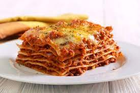

Lasagna

Description
Prepare this easy homemade lasagne ahead of time and save in the freezer, uncooked,
for when you need it during a busy week. Then just bake for an extra 45 mins.
Ingredients
- 2 tbsp olive oil, plus a little for the dish
- 750g lean beef mince
- 90g pack prosciutto
- tomato sauce
- 200ml hot beef stock
- a little grated nutmeg
- 300g fresh lasagne sheets
- white sauce
- 125g ball mozzarella, torn into thin strips
Steps